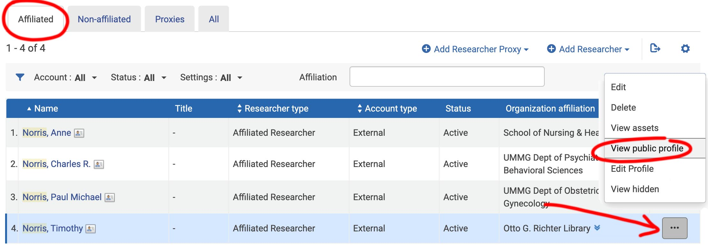

Faculty
Profile
Enrichment
Tim Norris - tnorris@miami.edu
Angela Clark - aclark@rsmas.miami.edu
Kineret Ben-Knaan - kbenknaan@miami.edu
Jason Cohen - j.cohen4@miami.edu
Leah Bamford - LBamford@med.miami.edu
- Introduction
- Esploro Faculty Profiles
- Key Concepts
- Smart Harvesting
- Author Matching Workflow
- Author Matching Strategies
Elsevier Pure > ExLibris Esploro : approximately one year
| Summer 2021 | Pilot Faculty Profile Enrichment | |
| Fall 2021 | Manual Faculty Profile Enrichment with Liaisons | |
| Spring 2022 | Launch campus-wide change management program | |
| Summer 2022 | Smart Harvest automatic profile enrichment |
* Google Chrome seems to work best
- In Esploro admin interface and select ‘researchers’ in the top left search bar, enter the researcher’s last name and press ‘enter’
- On the 'Affiliated' tab, locate the researcher and click on the elipsis on the far right of the researcher row -> choose ‘view public profile’

Asset | Can be any research output. May include peer reviewed articles, blog posts, conference presentations, and so on. |
|
Researcher | Any researcher that produced an asset in the repository. Can be affiliated or non-affiliated. The affiliated list comes from a Workday daily feed. Does not include staff or students unless manually entered. |
|
Central Discovery Index | The CDI. ExLibris' proprietary database of known assets. |
|
Smart Expansion | A manual process run in the Esploro back-end in which known researcher-asset matches are imported into the repository based on C Numbers and DOIs. |
|
Smart Harvest | Either a manual or automatic process run in the Esploro back-end in which known ExLibris' proprietary machine learning process attempts to match existing researchers with assets in the ExLibris CDI. |
|
Researcher Set | A manually created set of researchers used in Smart Harvest. |
Process |
Responsible |
Description |
Timeframe |
|
| 1. | CDI |
ExLibris |
Maintain proprietary Central Discovery Index |
Ongoing |
| 2. | Smart Expansion |
Internal Esploro Implementation Group |
Import metadata from CDI from known asset-researcher matches based on C Number and DOI |
Fast computer job |
| 3. | Manual Smart Harvest |
Internal Esploro Implementation Group |
ML based matching of assets in ExLibris CDI with researchers in Esploro. Researcher set created in Esploro back-end and is limited to five researchers. Author matches can be automatic or manually approved (very strong, strong, uncertain) |
Slow computer intensive job |
| 4. | Author Matching |
Liaisons |
Manual approval of matches from Smart Harvest (very strong, strong, uncertain) |
Slow human job |
| 5. | Smart Harvest |
Automatic |
Esploro back-end job that runs on a weekly(?) schedule to capture new assets/publications |
Ongoing |
C# | Faculty | Department | Pre-Harvest Assets | Post-Harvest Pending Assets |
C00076883 | Chao, Sonia, Raquel | Architecture | 1 | |
C11864666 | Barnes, Germane | Architecture | 1 | 2 |
C09924365 | Timpano, Nathan, James | Art & Art History | 7 | 4 |
C12154165 | Coakley, James | Mechnical and Aerospace Engineering | 29 | 102 |
C11901430 | Zhou, Yiqun | Chemistry | 37 | 5 |
C12139984 | Liang, Liang | Computer Science | 44 | |
C11910241 | Connolly, Jennifer, Marie | Political Science | 14 | |
C00718657 | Gonzalez, George, A | Political Science | 52 | 37 |
C06458350 | Fernandez, Dina | International Studies | 1 | 4 |
C11909666 | Rattan, Rishi | UMMG Dept. of Surgery | 104 | 5 |
C12081150 | Jaimes, Natalia | UMMG Dept. of Dermatology | 40 | 10 |
C12183293 | Natori, Yoichiro | UMMG Dept. of Medicine | 38 | 3 |
- Open Author Matching Task List in Esploro
- Filter researcher assets with "pending" status
- Assess each asset for match approval
- Accept
- or - - Reject
- Accept
There are two ways to open the author matching task list.

- Control the facets or filters on the left.
- Each active facet or filter will be displayed near the top of the page under the search bar.
- The "Status: Pending Approval" facet will always show for author matching tasks.
* When no researcher C.V. is available, the asset match assessment is based on “external” comparison by using other metadata sources.
Useful information to compare can include:
- names and affiliations
- publication year
- journal title
- publisher
- conference name
- abstract
- metadata quality
- etc
* When no researcher C.V. is available, the asset match assessment is based on “external” comparison by using other metadata sources.
Useful information to compare can include:
- names and affiliations
- publication year
- journal title
- publisher
- conference name
- abstract
- metadata quality
- etc


- Approve known and then mass delete
- Download task list and manage in Excel
- Use analytics dashboard to identify matches